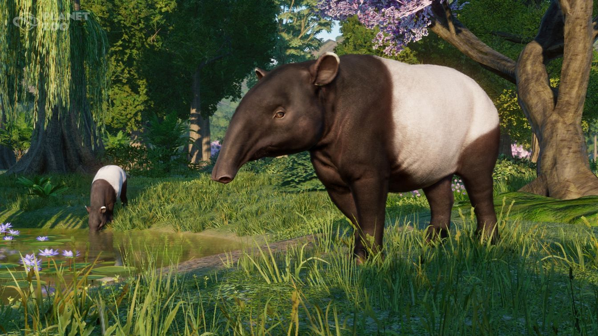
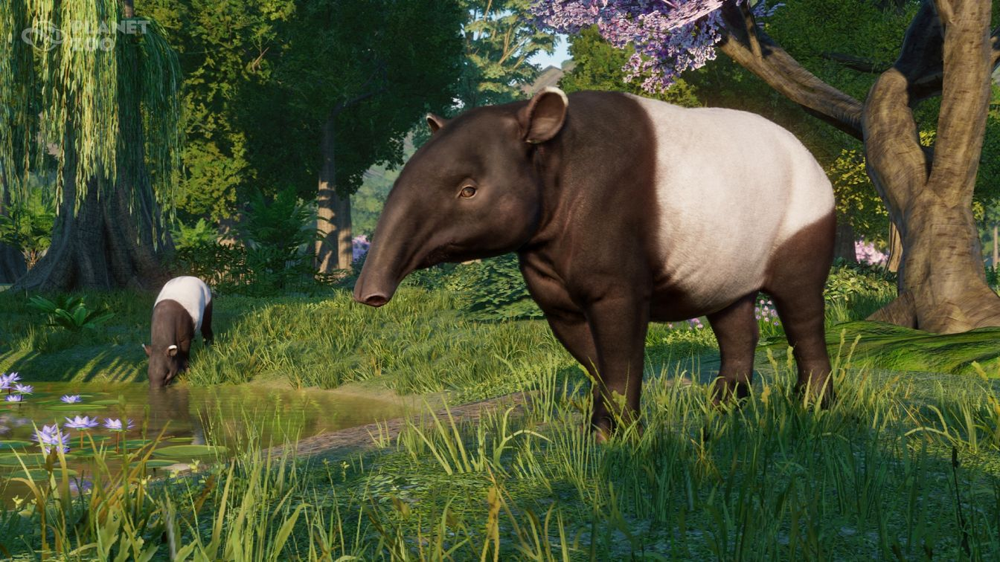

Southeast Asia Animal Pack
Data wydania: 30 marca 2021
Cena pakietu: 35.99 zł
Oficjalny zwiastun DLC Southeast Asia Animal Pack
Najbardziej autentyczna symulacja zoo wzbogaca się o pakiet zwierząt Azji Południowo-Wschodniej! Poznaj różnorodne i charakterystyczne zwierzęta z wyrazistego kontynentu w pierwszym dodatku DLC, w którym główną rolę odgrywają właśnie
zwierzęta. Najnowszy dodatek do gry Planet Zoo zawiera osiem niezwykłych stworzeń, z których każde charakteryzuje się fascynującymi zachowaniami i wyjątkowymi potrzebami.
Przygotowaliśmy też zupełnie nowy scenariusz, w którym możesz sprawdzić swoje siły. To okazja, aby obserwować przepiękne zwierzęta z nowego dodatku pośrodku rajskiej malezyjskiej przyrody. Nie zwlekaj! Kup Pakiet zwierząt Azji Południowo-Wschodniej już dzisiaj i zacznij budować swoje najwspanialsze zoo.
Przygotowaliśmy też zupełnie nowy scenariusz, w którym możesz sprawdzić swoje siły. To okazja, aby obserwować przepiękne zwierzęta z nowego dodatku pośrodku rajskiej malezyjskiej przyrody. Nie zwlekaj! Kup Pakiet zwierząt Azji Południowo-Wschodniej już dzisiaj i zacznij budować swoje najwspanialsze zoo.
Galeria zdjęć
 



O tym DLC
Przygotuj się do adopcji siedmiu cudownych zwierząt mieszkających na wybiegu i jednego pełzacza preferującego ekspozycje — wszystkie zwierzęta pochodzą z Azji Południowo-Wschodniej. W skład pakietu wchodzą biruang malajski, pantera mglista, tapir malajski, nosacz sundajski, babirussa sulaweska, binturong, cyjon rudy oraz liściec olbrzymi. Zbudujesz dla nich piękne wybiegi, będziesz je zabawiać urozmaiceniami oraz przekażesz gościom wiedzę na ich temat.
Podziwiaj na własne oczy żyjącą zwykle samotnie i w ukryciu panterę mglistą — pięknego cętkowanego kota rzadko obserwowanego na wolności. Zobacz, jak energiczne biruangi malajskie dokazują i bawią się ze sobą, po czym wspinają się na najwyższe drzewa. Karm nosacze sundajskie ich ulubionymi przysmakami.
Przygotuj idealną ekspozycję, w której liściec olbrzymi — prawdziwy ekspert od kamuflażu — będzie mógł się bezpiecznie ukryć. Słuchaj, jak watahy cyjonów rudych porozumiewają się ze sobą w niepowtarzalny sposób, gwiżdżąc. Opiekuj się tymi zwierzętami, dbaj o nie przez całe ich życie, pomagaj im znaleźć swoje miejsce w parku lub wypuszczaj na wolność.
Nowy scenariusz czeka
Park Haiwan-Hebat potrzebuje Twojej pomocy! Placówka, której malajska nazwa oznacza mniej więcej „wielki park zwierząt”, właśnie się rozbudowywała, gdy utraciła finansowanie. Masz więc szansę, aby zrealizować to odważne przedsięwzięcie. Twoim zadaniem w tym położonym w centrum malezyjskiego stanu Perak i otoczonym przepięknym lasem tropikalnym miejscu jest dokończenie na wpół gotowych wybiegów, adoptowanie wspaniałych nowych zwierząt, zatrudnienie odpowiedniego personelu i otwarcie parku dla zwiedzających z całego świata.
Powodzenie całego przedsięwzięcia zależy od tego, czy uda Ci się zbudować przynoszący zyski park, w którym najważniejszy jest dobrostan zwierząt. Wykorzystaj wszystkie dostępne już elementy scenerii, a także szczegółowe narzędzia do wznoszenia budowli i kształtowania krajobrazu. Pokaż, że potrafisz skutecznie zarządzać ogrodem zoologicznym. Nowy scenariusz idealnie nadaje się dla ośmiu nowych zwierząt, ale możesz też w nim wykorzystać dowolnych przedstawicieli dotychczasowej menażerii Planet Zoo, takich jak słoń indyjski, krokodyl różańcowy czy goryl nizinny.
Odkryj możliwości warsztatu Steam
Planet Zoo: Pakiet zwierząt Azji Południowo-Wschodniej jest w pełni zgodny z Warsztatem Steam. Dołącz do współpracującej ze sobą społeczności i przeglądaj najbardziej kreatywne wybiegi i scenerie na świecie oraz codziennie odkrywaj niesamowitą i całkowicie oryginalną zawartość tworzoną przez graczy. Możesz też tworzyć i udostępniać własne niezwykłe projekty, które będą pobierane przez graczy z całego świata. Mogą to być dowolne elementy — od centrów ekspozycji z gadami po restauracje. W Warsztacie Steam znajdziesz już ponad 50 000 przedmiotów do gry Planet Zoo. Obejrzyj je już dziś!